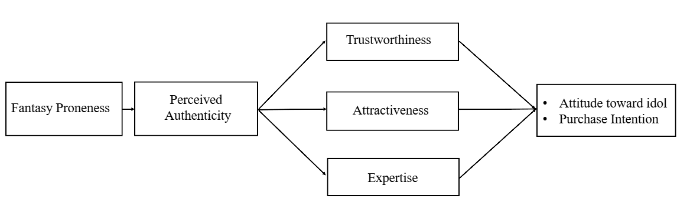

LINA: Authenticity in Virtual Idols.
How do fantasy proneness and authenticity cues shape judgments of a fictional virtual idol endorsing headphones?
Conference details can be updated separately for each project.
01 / Research question
How do fantasy proneness and authenticity cues shape judgments of a fictional virtual idol endorsing headphones?
02 / Conceptual framework

03 / Research design
A two-condition online experiment randomly assigned participants to high- or low-authenticity-cue Instagram-style posts featuring LINA, a fictional virtual idol endorsing headphones. The current draft reports 297 usable responses (high n = 148; low n = 149). Fantasy proneness was measured; perceived authenticity, source credibility, idol attitude, and purchase intention were assessed after exposure.
04 / Research status
05 / Implications
The study is designed to examine how people make authenticity and credibility judgments about an openly fictional digital endorser. The manuscript supplied for this portfolio does not yet contain completed results or conclusions.
06 / Manuscript & disclosure
This is a conference-oriented research manuscript. Submission, acceptance, and presentation status have not been independently confirmed. A full-text manuscript download is intentionally not provided here.